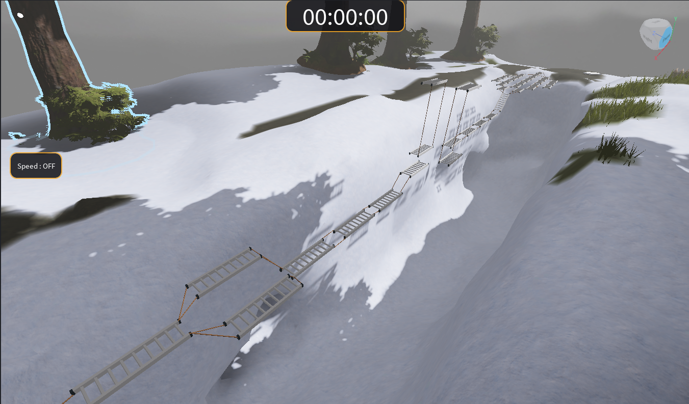

STAGE 01
Start → Checkpoint 1
False Step Ladder
Difficulty★★★☆☆ MEDIUM
Pemain harus melewati rangkaian tangga yang tergantung di atas jurang. Tidak semua tangga dapat diinjak; beberapa merupakan jebakan yang membuat pemain langsung terjatuh. Pemain harus memilih pijakan dengan hati-hati untuk mencapai Checkpoint 1.
Tip: Perhatikan setiap pijakan dan jangan terburu-buru melompat.